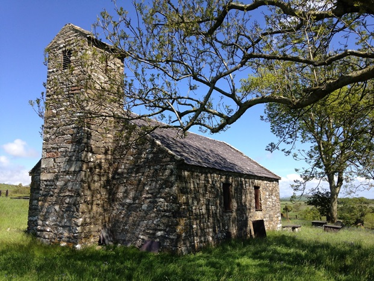

Carnguwch Church
This church is one of six churches in Gwynedd, consecrated to Beuno, a seventh century saint. It is likely that there was a place of worship here at that time, and the circular cemetery also alludes to this fact. In the nineteenth century, it was noted that the church, shaped like a cross, was in a grave state. it was rebuilt in 1828, and the east window was reused. When Llithfaen developed as a village, a new church was built for that parish in 1882 that led to Carnguwch being closed.
